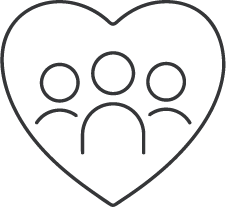
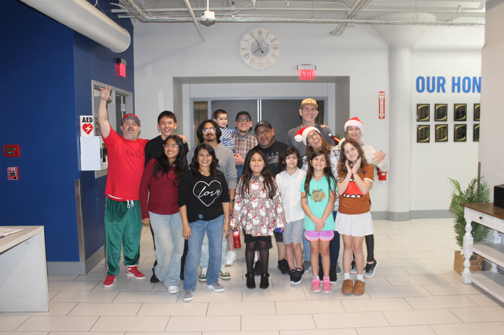
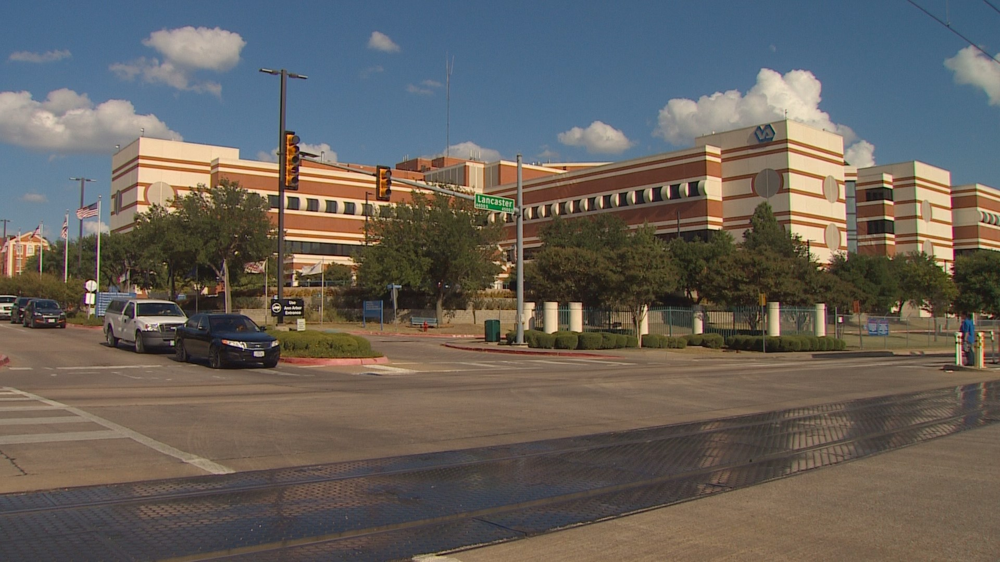
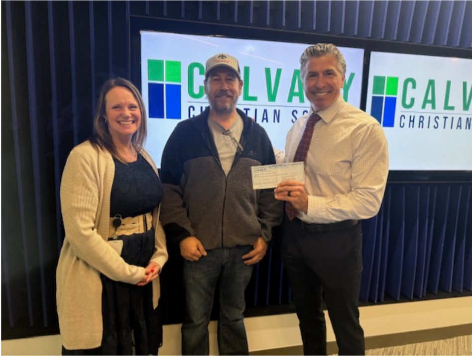
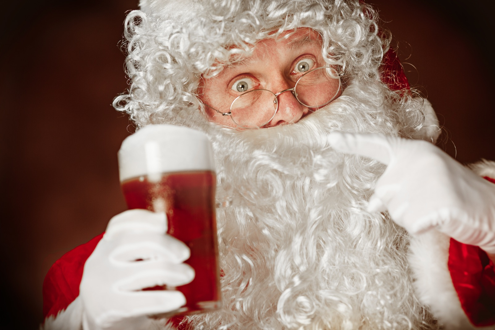
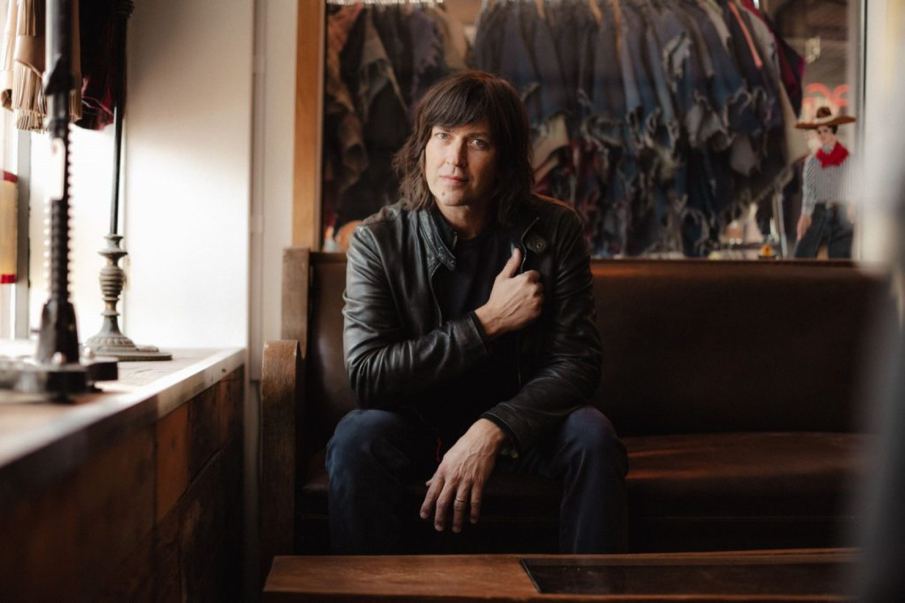

26 Years
Serving Dallas
assets/Dallas.mp4. Showing poster image if available.Supporting homeless neighbors, veterans, and families in crisis through hands-on outreach, community events, and compassionate action.
Join a community dedicated to helping those who need it most.
Since 1996, Tonight We Ride has delivered direct outreach support for Dallas families, homeless neighbors, and veterans through consistent, community-led action.
26 Years
Serving Dallas

Thousands
of Families Supported
Hundreds
of Volunteers Mobilized
Our Mission
Tonight We Ride is a Dallas community outreach nonprofit serving individuals and families in need through direct action, meaningful connection, and compassionate support for homelessness, veterans, crisis response, and neighborhood care.
We are committed to showing up where help is needed most, building relationships, and changing the world, one person at a time.
AboutTypical response target for incoming outreach requests.
Core initiatives serving homelessness, need-help intake, veteran support, community partners, and crisis relief.
Collaboration with trusted Dallas providers for long-term stabilization.
Consistent follow-up built on dignity, trust, and practical support.

We meet people where they are with practical support, dignity, and consistency while building trust over time.
Explore Program
We support veterans facing housing instability, financial crisis, and isolation with urgent aid and follow-through.
Explore Program
Local organizations and businesses help expand our reach, provide vital resources, and strengthen every outreach effort.
Explore Program
When crisis strikes, Tonight We Ride rallies people, raises resources, and turns community support into direct relief for families facing sudden hardship.
Explore ProgramGet frontline updates, upcoming outreach opportunities, and urgent action alerts from Tonight We Ride.

Our annual toy drive is a long-running Dallas tradition that helps local families during the holiday season through live music, donated gifts, and direct community support.
View Toy Drive
When crisis strikes — whether it’s a storm, fire, or local tragedy — our community shows up. The TWR Crisis Concert Series brings people together through live music and generosity to support families and neighbors when they need it most.
Learn MoreLatest
Recent media coverage, press releases, and community updates from Tonight We Ride.

Press Release

Dallas Observer

KXT